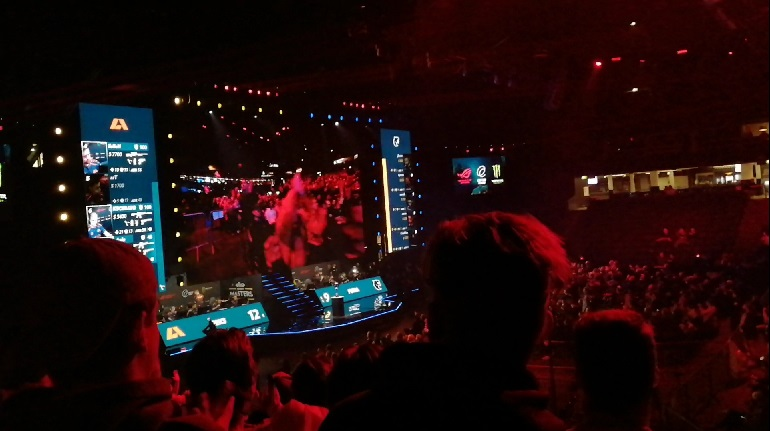

E-urheilu, eli elektroninen urheilu on videopelien kilpailullista pelaamista. Pelit ovat usein moninpelejä, mutta e-urheiluun voidaan tulkita mukaan myös erilaiset yksinpelit, joita "Speedrunataan" eli yritetään pelata mahdollisimman nopeasti läpi käyttämällä erinäisiä kikkoja ja jopa pelin bugeja, eli niin kutsuttuja "glitchejä" apuna. Kilpailun säännöt päättävät sen, saako bugeja käyttää hyväkseen.
Speedrunit voivat olla myös tiettyjä prosenttimääriä koko pelin läpi peluusta. Esimerkiksi 100% vaatii, että kaikki tehtävät ja kerättävät asiat pelissä on tehty. Any% (any percent) puolestaan tarkoittaa, että teoriassa voi glitchillä saada pelin luulemaan, että olet pelannut esimerkiksi tietyn tason läpi. Joskus tämä voi tarkoittaa, että pelaaja pääsee pelissä lähelle pelin loppua, jolloin pelaaja voi pelata mahdollisimman nopeasti pelin loppuun ja saada hyvän ajan. Peliä ei siis tarvitse pelata läpikotaisin, vaan riittää, että pääsee loppuun, kun kyseessä on Any%-yritys.
Moninpelit ovat puolestaan kuitenkin suosituin kategoria e-urheilun harrastajien keskuudessa. Moninpeleissä kilpaillaan yksinkertaisesti vastapelaajan voittamisesta pelissä. E-urheilun suosio on ollut valtavassa nousussa jo ennen koronaa. Koronan aikana moni tutustui pelien maailmaan ja ryhtyi pelaamaan säännöllisesti. Täten myös e-urheilun yleisö on kasvanut ja samoin palkintorahojen suuruus.
Pelaan paljon kilpailullisia videopelejä, en niinkään yksinpelejä. Tykkään kehittyä valitsemissani peleissä mahdollisimman hyväksi pelaajaksi. Seuraan jonkin verran e-urheilua.
Nuorempana unelmani oli päästä ammattipelaajaksi ja silloin seurasinkin paljon e-urheilua.
Alla ottamani kuva Elisa Masters -kisoista joulukuussa 2023